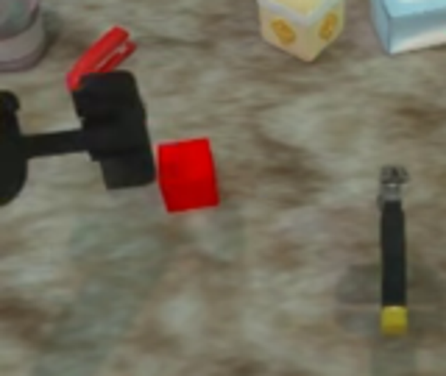
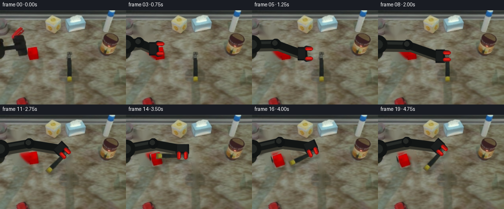
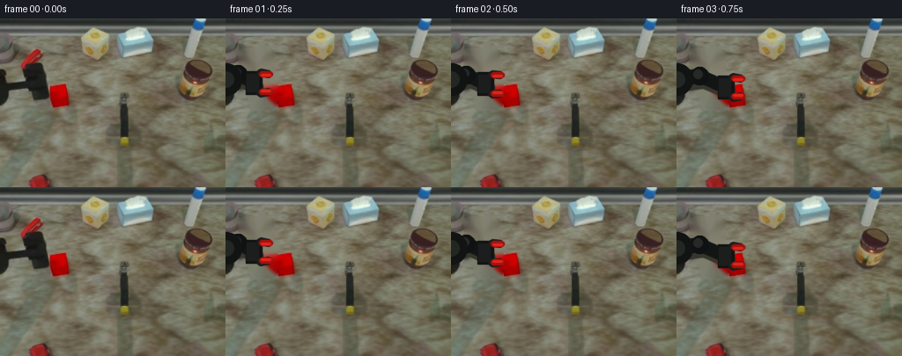
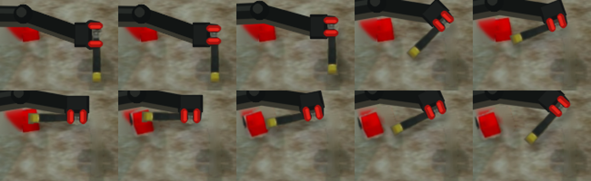

CODING AGENTS AS PIXEL WORLD MODELS
traex/GPT-5.6-Sol · common50_0049
点击播放 · 原生 RGB 像素
逐轮保存的候选
回放视频、检查图与代码变化。
每份候选均可单独播放。实际图片检查记录在下方工具轨迹中。
候选 01播放与检查图
点击播放 · 原生 RGB 像素

展开代码变化
--- 上一保存版本
+++ 本次保存版本
@@ -0,0 +1,170 @@
+from pathlib import Path
+import math
+import cv2
+import numpy as np
+from PIL import Image
+import artifact_io
+
+CASE = Path(__file__).resolve().parent
+SRC = np.array(Image.open(CASE / 'first_frame.png').convert('RGB'))
+H, W = SRC.shape[:2]
+
+def ease(t):
+ t=max(0.0,min(1.0,float(t)))
+ return t*t*(3-2*t)
+
+def poly_mask(points, blur=0.8):
+ m=np.zeros((H,W),np.uint8)
+ cv2.fillPoly(m,[np.int32(points)],255)
+ if blur:
+ m=cv2.GaussianBlur(m,(0,0),blur)
+ return m
+
+def union_masks(*ms):
+ return np.maximum.reduce(ms)
+
+# Masks are deliberately tight so that the actual image pixels, including their soft
+# photographed edges, are used for the two manipulated objects.
+tool_mask = union_masks(
+ poly_mask([(136,84),(145,84),(148,93),(146,101),(136,101),(134,94)], .55),
+ poly_mask([(137,97),(145,97),(146,139),(136,139)], .55),
+ poly_mask([(136,135),(146,135),(147,146),(136,146)], .55)
+)
+block_mask = poly_mask([(53,77),(73,73),(80,96),(76,101),(58,103),(54,98)], .7)
+old_arm_mask = poly_mask([(15,35),(48,32),(55,47),(55,71),(58,72),(57,99),(29,100),(25,87),(15,86)], 1.0)
+
+# Clean plate made solely from the supplied first frame.
+def inpaint_rgb(im, mask, radius=5):
+ bgr=cv2.cvtColor(im,cv2.COLOR_RGB2BGR)
+ out=cv2.inpaint(bgr,(mask>15).astype(np.uint8)*255,radius,cv2.INPAINT_TELEA)
+ return cv2.cvtColor(out,cv2.COLOR_BGR2RGB)
+
+bg_arm = inpaint_rgb(SRC, old_arm_mask, 6)
+bg_clean = inpaint_rgb(bg_arm, tool_mask, 5)
+bg_all_clean = inpaint_rgb(bg_clean, block_mask, 7)
+
+# Transform a cutout around an image-space pivot. angle is visual clockwise degrees
+# (positive turns the downward tool toward the left).
+def transformed_cutout(source, alpha, src_pivot, dst_pivot, angle=0.0, scale=1.0):
+ a=math.radians(angle); c=math.cos(a)*scale; s=math.sin(a)*scale
+ px,py=src_pivot; qx,qy=dst_pivot
+ M=np.array([[c,-s,qx-c*px+s*py],[s,c,qy-s*px-c*py]],np.float32)
+ rgb=cv2.warpAffine(source,M,(W,H),flags=cv2.INTER_LINEAR,borderMode=cv2.BORDER_CONSTANT,borderValue=(0,0,0))
+ al=cv2.warpAffine(alpha,M,(W,H),flags=cv2.INTER_LINEAR,borderMode=cv2.BORDER_CONSTANT,borderValue=0)
+ return rgb,al
+
+def over(dst, rgb, alpha):
+ a=(alpha.astype(np.float32)/255.0)[...,None]
+ return np.clip(dst.astype(np.float32)*(1-a)+rgb.astype(np.float32)*a,0,255).astype(np.uint8)
+
+def add_shadow(frame, alpha, dx=4, dy=5, strength=0.24, blur=3.0):
+ M=np.float32([[1,0,dx],[0,1,dy]])
+ sh=cv2.warpAffine(alpha,M,(W,H),flags=cv2.INTER_LINEAR,borderValue=0)
+ sh=cv2.GaussianBlur(sh,(0,0),blur).astype(np.float32)/255.0*strength
+ return np.clip(frame.astype(np.float32)*(1-sh[...,None]),0,255).astype(np.uint8)
+
+def unit(v):
+ v=np.asarray(v,np.float32); n=float(np.linalg.norm(v))
+ return v/(n if n>1e-5 else 1)
+
+def ipoly(img, pts, color):
+ cv2.fillConvexPoly(img,np.round(pts).astype(np.int32),color,lineType=cv2.LINE_AA)
+
+def draw_robot(frame, jaw, palm, closed=False, wrist_angle=None):
+ """Stable, rigid two-link tabletop robot and parallel-jaw gripper."""
+ out=frame.copy()
+ jaw=np.array(jaw,np.float32); palm=np.array(palm,np.float32)
+ anchor=np.array([-5.,69.],np.float32)
+ # A restrained elbow creates an articulated silhouette while the base stays fixed.
+ mid=(anchor+palm)*.50 + np.array([0., -8.-0.035*max(0,palm[0]-40)],np.float32)
+ # soft contact shadows
+ cv2.line(out,tuple(np.round(anchor+[3,5]).astype(int)),tuple(np.round(mid+[3,5]).astype(int)),(55,54,45),17,cv2.LINE_AA)
+ cv2.line(out,tuple(np.round(mid+[3,5]).astype(int)),tuple(np.round(palm+[3,5]).astype(int)),(55,54,45),15,cv2.LINE_AA)
+ # rigid links with subtle highlights
+ cv2.line(out,tuple(np.round(anchor).astype(int)),tuple(np.round(mid).astype(int)),(20,23,22),15,cv2.LINE_AA)
+ cv2.line(out,tuple(np.round(mid).astype(int)),tuple(np.round(palm).astype(int)),(18,21,20),13,cv2.LINE_AA)
+ cv2.line(out,tuple(np.round(anchor+[0,-3]).astype(int)),tuple(np.round(mid+[0,-3]).astype(int)),(38,42,39),3,cv2.LINE_AA)
+ cv2.circle(out,tuple(np.round(mid).astype(int)),10,(15,18,18),-1,cv2.LINE_AA)
+ cv2.circle(out,tuple(np.round(mid+[-2,-2]).astype(int)),5,(38,41,38),-1,cv2.LINE_AA)
+ cv2.circle(out,(0,69),18,(17,20,19),-1,cv2.LINE_AA)
+ cv2.circle(out,(0,69),9,(35,39,36),-1,cv2.LINE_AA)
+
+ if wrist_angle is None:
+ u=unit(jaw-palm)
+ else:
+ a=math.radians(wrist_angle)
+ # initial gripper axis points right; rotate with the grasped tool
+ u=np.array([math.cos(a),math.sin(a)],np.float32)
+ n=np.array([-u[1],u[0]],np.float32)
+ # wrist collar and palm
+ center=palm
+ ipoly(out,[center-u*9-n*13,center+u*9-n*13,center+u*9+n*13,center-u*9+n*13],(18,20,20))
+ ipoly(out,[center-u*8-n*10,center+u*5-n*10,center+u*5+n*10,center-u*8+n*10],(27,30,29))
+ # parallel jaws. Opening visibly closes around the silver head.
+ gap=5.2 if closed else 8.8
+ base=center+u*7
+ front=jaw+u*2
+ for sign in (-1,1):
+ p0=base+n*(sign*(gap+3.0)); p1=front+n*(sign*(gap+1.5))
+ cv2.line(out,tuple(np.round(p0).astype(int)),tuple(np.round(p1).astype(int)),(27,29,28),7,cv2.LINE_AA)
+ # recognizable red rubber jaw pads
+ r0=p1-u*8; r1=p1+u*1
+ cv2.line(out,tuple(np.round(r0).astype(int)),tuple(np.round(r1).astype(int)),(160,18,14),6,cv2.LINE_AA)
+ cv2.line(out,tuple(np.round(r0-n*sign).astype(int)),tuple(np.round(r1-n*sign).astype(int)),(224,35,25),2,cv2.LINE_AA)
+ return out
+
+# Original positions and planned manipulation.
+TOOL_PIVOT=(141.0,93.0)
+BLOCK_PIVOT=(66.5,88.0)
+frames=[]
+for i in range(20):
+ if i==0:
+ frames.append(SRC.copy()); continue
+
+ # From frame 1 onward the old end-effector is removed and redrawn coherently.
+ struck = i >= 14
+ frame=(bg_all_clean if struck else bg_clean).copy()
+
+ # The red block remains fixed until contact, then slides/tumbles a short distance.
+ if struck:
+ if i==14: bd=(-5,2,-4)
+ elif i==15: bd=(-10,4,-8)
+ elif i==16: bd=(-13,5,-10)
+ else: bd=(-14,5,-9)
+ br,bm=transformed_cutout(SRC,block_mask,BLOCK_PIVOT,(BLOCK_PIVOT[0]+bd[0],BLOCK_PIVOT[1]+bd[1]),bd[2])
+ frame=add_shadow(frame,bm,3,4,.20,2.4); frame=over(frame,br,bm)
+
+ if i <= 7:
+ # Smooth reach from its starting pose to the silver head; tool stays grounded.
+ t=ease((i-1)/6)
+ jaw=np.array([47+(141-47)*t, 73+(93-73)*t],np.float32)
+ palm=jaw-np.array([15.,0.],np.float32)
+ tr,tm=transformed_cutout(SRC,tool_mask,TOOL_PIVOT,TOOL_PIVOT,0)
+ frame=over(frame,tr,tm)
+ frame=draw_robot(frame,jaw,palm,closed=False)
+ elif i==8:
+ tr,tm=transformed_cutout(SRC,tool_mask,TOOL_PIVOT,TOOL_PIVOT,0)
+ frame=over(frame,tr,tm)
+ jaw=np.array(TOOL_PIVOT,np.float32); palm=jaw-np.array([15.,0.],np.float32)
+ frame=draw_robot(frame,jaw,palm,closed=True,wrist_angle=0)
+ else:
+ # Lift, wind up, strike with the yellow handle end, then rebound while retaining grip.
+ motion={
+ 9:((140,84),0), 10:((137,80),22), 11:((133,79),45),
+ 12:((127,81),70), 13:((119,85),90), 14:((114,84),91),
+ 15:((119,81),79), 16:((124,77),65), 17:((128,74),52),
+ 18:((131,73),43), 19:((131,73),43)}
+ pivot,ang=motion[i]
+ tr,tm=transformed_cutout(SRC,tool_mask,TOOL_PIVOT,pivot,ang)
+ # Raised object has a separated soft shadow, strongest during the swing.
+ frame=add_shadow(frame,tm,5,8,.25,3.2)
+ frame=over(frame,tr,tm)
+ a=math.radians(ang); u=np.array([math.cos(a),math.sin(a)],np.float32)
+ jaw=np.array(pivot,np.float32); palm=jaw-u*15
+ frame=draw_robot(frame,jaw,palm,closed=True,wrist_angle=ang)
+
+ frames.append(frame)
+
+frames=np.stack(frames).astype(np.uint8)
+assert np.array_equal(frames[0],SRC)
+artifact_io.save(frames,CASE)
可观测工具轨迹
实际执行的命令与返回图片。
命令 1exit 0
/bin/bash -lc "cat GENERATION_RULES.md && printf '\\n---PROMPT---\\n' && cat prompt.txt"
命令 2exit 0
/bin/bash -lc "find . -maxdepth 2 -type f -printf '%p %s bytes\\n' | sort"
命令 3exit 0
/bin/bash -lc "cat task_spec.json; sed -n '1,240p' artifact_io.py"
命令 4exit 0
/bin/bash -lc "python - <<'PY'
from PIL import Image
im=Image.open('first_frame.png')
print(im.mode,im.size)
PY"命令 5exit 0
/bin/bash -lc "python - <<'PY'
from PIL import Image
im=Image.open('first_frame.png'); im.crop((0,25,160,160)).resize((640,540)).save('crop.png')
PY"命令 6exit 0
/bin/bash -lc "python - <<'PY'
try:
import cv2; print('cv2',cv2.__version__)
except Exception as e: print(e)
PY"命令 7exit 0
/bin/bash -lc "cat > generate.py <<'PY'
from pathlib import Path
import math
import cv2
import numpy as np
from PIL import Image
import artifact_io
CASE = Path(__file__).resolve().parent
SRC = np.array(Image.open(CASE / 'first_frame.png').convert('RGB'))
H, W = SRC.shape[:2]
def ease(t):
t=max(0.0,min(1.0,float(t)))
return t*t*(3-2*t)
def poly_mask(points, blur=0.8):
m=np.zeros((H,W),np.uint8)
cv2.fillPoly(m,[np.int32(points)],255)
if blur:
m=cv2.GaussianBlur(m,(0,0),blur)
return m
def union_masks(*ms):
return np.maximum.reduce(ms)
# Masks are deliberately tight so that the actual image pixels, including their soft
# photographed edges, are used for the two manipulated objects.
tool_mask = union_masks(
poly_mask([(136,84),(145,84),(148,93),(146,101),(136,101),(134,94)], .55),
poly_mask([(137,97),(145,97),(146,139),(136,139)], .55),
poly_mask([(136,135),(146,135),(147,146),(136,146)], .55)
)
block_mask = poly_mask([(53,77),(73,73),(80,96),(76,101),(58,103),(54,98)], .7)
old_arm_mask = poly_mask([(15,35),(48,32),(55,47),(55,71),(58,72),(57,99),(29,100),(25,87),(15,86)], 1.0)
# Clean plate made solely from the supplied first frame.
def inpaint_rgb(im, mask, radius=5):
bgr=cv2.cvtColor(im,cv2.COLOR_RGB2BGR)
out=cv2.inpaint(bgr,(mask>15).astype(np.uint8)*255,radius,cv2.INPAINT_TELEA)
return cv2.cvtColor(out,cv2.COLOR_BGR2RGB)
bg_arm = inpaint_rgb(SRC, old_arm_mask, 6)
bg_clean = inpaint_rgb(bg_arm, tool_mask, 5)
bg_all_clean = inpaint_rgb(bg_clean, block_mask, 7)
# Transform a cutout around an image-space pivot. angle is visual clockwise degrees
# (positive turns the downward tool toward the left).
def transformed_cutout(source, alpha, src_pivot, dst_pivot, angle=0.0, scale=1.0):
a=math.radians(angle); c=math.cos(a)*scale; s=math.sin(a)*scale
px,py=src_pivot; qx,qy=dst_pivot
M=np.array([[c,-s,qx-c*px+s*py],[s,c,qy-s*px-c*py]],np.float32)
rgb=cv2.warpAffine(source,M,(W,H),flags=cv2.INTER_LINEAR,borderMode=cv2.BORDER_CONSTANT,borderValue=(0,0,0))
al=cv2.warpAffine(alpha,M,(W,H),flags=cv2.INTER_LINEAR,borderMode=cv2.BORDER_CONSTANT,borderValue=0)
return rgb,al
def over(dst, rgb, alpha):
a=(alpha.astype(np.float32)/255.0)[...,None]
return np.clip(dst.astype(np.float32)*(1-a)+rgb.astype(np.float32)*a,0,255).astype(np.uint8)
def add_shadow(frame, alpha, dx=4, dy=5, strength=0.24, blur=3.0):
M=np.float32([[1,0,dx],[0,1,dy]])
sh=cv2.warpAffine(alpha,M,(W,H),flags=cv2.INTER_LINEAR,borderValue=0)
sh=cv2.GaussianBlur(sh,(0,0),blur).astype(np.float32)/255.0*strength
return np.clip(frame.astype(np.float32)*(1-sh[...,None]),0,255).astype(np.uint8)
def unit(v):
v=np.asarray(v,np.float32); n=float(np.linalg.norm(v))
return v/(n if n>1e-5 else 1)
def ipoly(img, pts, color):
cv2.fillConvexPoly(img,np.round(pts).astype(np.int32),color,lineType=cv2.LINE_AA)
def draw_robot(frame, jaw, palm, closed=False, wrist_angle=None):
\"\"\"Stable, rigid two-link tabletop robot and parallel-jaw gripper.\"\"\"
out=frame.copy()
jaw=np.array(jaw,np.float32); palm=np.array(palm,np.float32)
anchor=np.array([-5.,69.],np.float32)
# A restrained elbow creates an articulated silhouette while the base stays fixed.
mid=(anchor+palm)*.50 + np.array([0., -8.-0.035*max(0,palm[0]-40)],np.float32)
# soft contact shadows
cv2.line(out,tuple(np.round(anchor+[3,5]).astype(int)),tuple(np.round(mid+[3,5]).astype(int)),(55,54,45),17,cv2.LINE_AA)
cv2.line(out,tuple(np.round(mid+[3,5]).astype(int)),tuple(np.round(palm+[3,5]).astype(int)),(55,54,45),15,cv2.LINE_AA)
# rigid links with subtle highlights
cv2.line(out,tuple(np.round(anchor).astype(int)),tuple(np.round(mid).astype(int)),(20,23,22),15,cv2.LINE_AA)
cv2.line(out,tuple(np.round(mid).astype(int)),tuple(np.round(palm).astype(int)),(18,21,20),13,cv2.LINE_AA)
cv2.line(out,tuple(np.round(anchor+[0,-3]).astype(int)),tuple(np.round(mid+[0,-3]).astype(int)),(38,42,39),3,cv2.LINE_AA)
cv2.circle(out,tuple(np.round(mid).astype(int)),10,(15,18,18),-1,cv2.LINE_AA)
cv2.circle(out,tuple(np.round(mid+[-2,-2]).astype(int)),5,(38,41,38),-1,cv2.LINE_AA)
cv2.circle(out,(0,69),18,(17,20,19),-1,cv2.LINE_AA)
cv2.circle(out,(0,69),9,(35,39,36),-1,cv2.LINE_AA)
if wrist_angle is None:
u=unit(jaw-palm)
else:
a=math.radians(wrist_angle)
# initial gripper axis points right; rotate with the grasped tool
u=np.array([math.cos(a),math.sin(a)],np.float32)
n=np.array([-u[1],u[0]],np.float32)
# wrist collar and palm
center=palm
ipoly(out,[center-u*9-n*13,center+u*9-n*13,center+u*9+n*13,center-u*9+n*13],(18,20,20))
ipoly(out,[center-u*8-n*10,center+u*5-n*10,center+u*5+n*10,center-u*8+n*10],(27,30,29))
# parallel jaws. Opening visibly closes around the silver head.
gap=5.2 if closed else 8.8
base=center+u*7
front=jaw+u*2
for sign in (-1,1):
p0=base+n*(sign*(gap+3.0)); p1=front+n*(sign*(gap+1.5))
cv2.line(out,tuple(np.round(p0).astype(int)),tuple(np.round(p1).astype(int)),(27,29,28),7,cv2.LINE_AA)
# recognizable red rubber jaw pads
r0=p1-u*8; r1=p1+u*1
cv2.line(out,tuple(np.round(r0).astype(int)),tuple(np.round(r1).astype(int)),(160,18,14),6,cv2.LINE_AA)
cv2.line(out,tuple(np.round(r0-n*sign).astype(int)),tuple(np.round(r1-n*sign).astype(int)),(224,35,25),2,cv2.LINE_AA)
return out
# Original positions and planned manipulation.
TOOL_PIVOT=(141.0,93.0)
BLOCK_PIVOT=(66.5,88.0)
frames=[]
for i in range(20):
if i==0:
frames.append(SRC.copy()); continue
# From frame 1 onward the old end-effector is removed and redrawn coherently.
struck = i >= 14
frame=(bg_all_clean if struck else bg_clean).copy()
# The red block remains fixed until contact, then slides/tumbles a short distance.
if struck:
if i==14: bd=(-5,2,-4)
elif i==15: bd=(-10,4,-8)
elif i==16: bd=(-13,5,-10)
else: bd=(-14,5,-9)
br,bm=transformed_cutout(SRC,block_mask,BLOCK_PIVOT,(BLOCK_PIVOT[0]+bd[0],BLOCK_PIVOT[1]+bd[1]),bd[2])
frame=add_shadow(frame,bm,3,4,.20,2.4); frame=over(frame,br,bm)
if i <= 7:
# Smooth reach from its starting pose to the silver head; tool stays grounded.
t=ease((i-1)/6)
jaw=np.array([47+(141-47)*t, 73+(93-73)*t],np.float32)
palm=jaw-np.array([15.,0.],np.float32)
tr,tm=transformed_cutout(SRC,tool_mask,TOOL_PIVOT,TOOL_PIVOT,0)
frame=over(frame,tr,tm)
frame=draw_robot(frame,jaw,palm,closed=False)
elif i==8:
tr,tm=transformed_cutout(SRC,tool_mask,TOOL_PIVOT,TOOL_PIVOT,0)
frame=over(frame,tr,tm)
jaw=np.array(TOOL_PIVOT,np.float32); palm=jaw-np.array([15.,0.],np.float32)
frame=draw_robot(frame,jaw,palm,closed=True,wrist_angle=0)
else:
# Lift, wind up, strike with the yellow handle end, then rebound while retaining grip.
motion={
9:((140,84),0), 10:((137,80),22), 11:((133,79),45),
12:((127,81),70), 13:((119,85),90), 14:((114,84),91),
15:((119,81),79), 16:((124,77),65), 17:((128,74),52),
18:((131,73),43), 19:((131,73),43)}
pivot,ang=motion[i]
tr,tm=transformed_cutout(SRC,tool_mask,TOOL_PIVOT,pivot,ang)
# Raised object has a separated soft shadow, strongest during the swing.
frame=add_shadow(frame,tm,5,8,.25,3.2)
frame=over(frame,tr,tm)
a=math.radians(ang); u=np.array([math.cos(a),math.sin(a)],np.float32)
jaw=np.array(pivot,np.float32); palm=jaw-u*15
frame=draw_robot(frame,jaw,palm,closed=True,wrist_angle=ang)
frames.append(frame)
frames=np.stack(frames).astype(np.uint8)
assert np.array_equal(frames[0],SRC)
artifact_io.save(frames,CASE)
PY
python generate.py
"命令 8exit 0
/bin/bash -lc "python - <<'PY'
from PIL import Image
for i in [7,8,9,11,12,13,14,15,16,19]:
im=Image.open(f'frames/{i:02}.png'); im.crop((35,55,165,155)).resize((390,300)).save(f'detail_{i:02}.png')
# sheet
out=Image.new('RGB',(390*5,300*2))
for j,i in enumerate([7,8,9,11,12,13,14,15,16,19]):out.paste(Image.open(f'detail_{i:02}.png'),((j%5)*390,(j//5)*300))
out.save('details.png')
PY"命令 9exit 0
/bin/bash -lc "python generate.py && python - <<'PY'
import numpy as np
from PIL import Image
z=np.load('pixels.npz')['pixels']
assert z.shape==(192,256,20)
p=z.transpose(2,0,1)
r=((p>>16)&255).astype('uint8'); g=((p>>8)&255).astype('uint8'); b=(p&255).astype('uint8')
a=np.stack([r,g,b],-1)
first=np.array(Image.open('first_frame.png').convert('RGB'))
print('frames:',a.shape,a.dtype,'first_exact:',np.array_equal(a[0],first),'changed_pixels:',[(a[i]"'!=a[i-1]).any(2).sum() for i in range(1,20)])
PY'视觉工具实际返回图片 1

视觉工具实际返回图片 2

视觉工具实际返回图片 3

视觉工具实际返回图片 4

视觉工具实际返回图片 5

保存候选 1 份；完成命令 9 次；可验证图片返回 5 张。原始 API 响应与完整日志保留在本地。